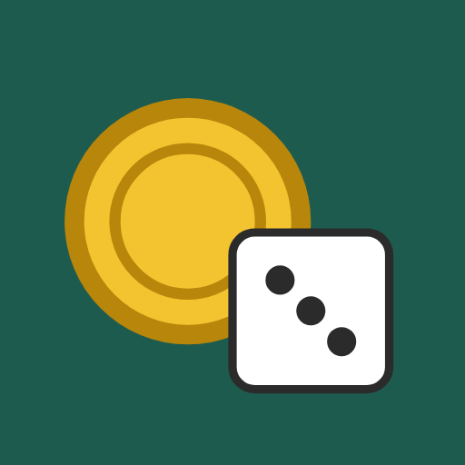

Cara o Cruz y Dados
Tirá una moneda o un dado en un toque. Simple, rápido y sin anuncios.
¿No se ponen de acuerdo? ¿Quién empieza? ¿Qué pedimos para cenar? Dejalo en manos del azar.
Funciones
- Tirar una moneda con animación de giro y ver si salió Cara o Cruz.
- Tirar un dado de 6 caras y ver el resultado al instante.
- Consultar el historial de tus últimas 10 tiradas.
- Ver cuántas caras y cruces salieron, o el promedio de tus tiradas de dado.
- Usarla en modo claro u oscuro, según la configuración de tu teléfono.
Sin anuncios, sin registro y sin permisos especiales. Funciona sin conexión a internet y no recopila ningún dato.